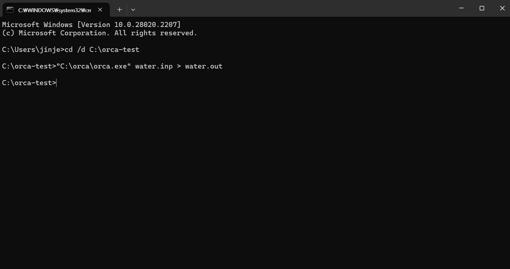
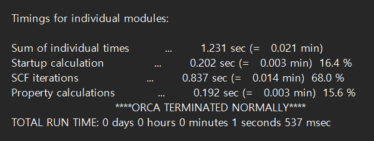
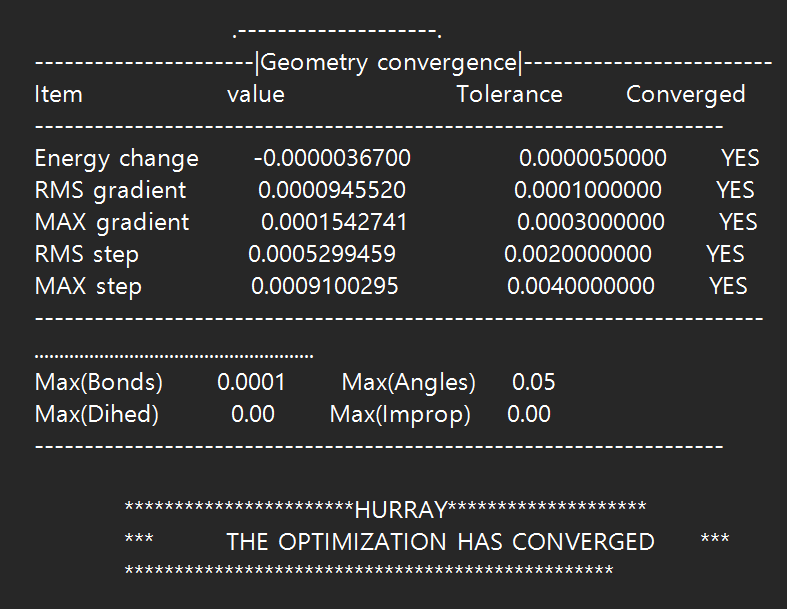
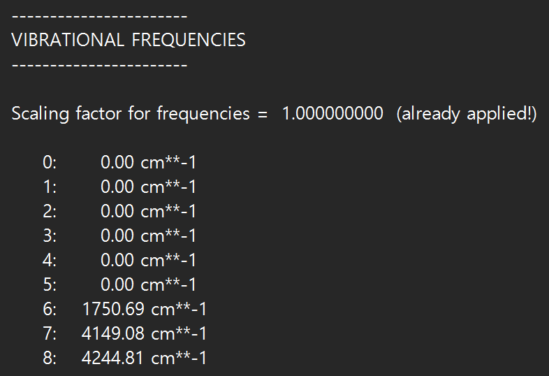
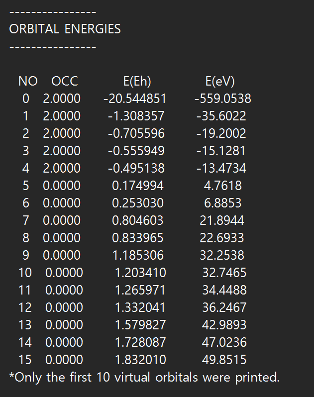
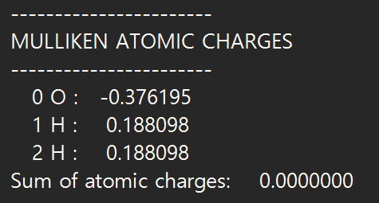
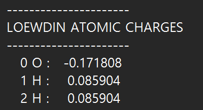

ORCA
분자의 에너지, 구조, 진동, 전자구조 등을 계산하는 양자화학 프로그램입니다.
Overview → Quick Start → Common Problems 순서로 먼저 읽어도 됩니다.
Overview
ORCA는 사용자가 작성한 input 파일을 기반으로 분자의 에너지, 구조, 진동, 전자구조 등을 계산하는 양자화학 프로그램입니다.
Before You Start
| 필요 요소 | 역할 |
|---|---|
| ORCA executable | 계산 수행 |
| .inp | 계산 조건과 구조 입력 |
| .out | 텍스트 결과 확인 |
| .gbw / .xyz / .hess | 계산 종류에 따라 생성되는 주요 결과 파일 |
Input Structure
! HF def2-SVP SP
* xyz 0 1
O 0.0000 0.0000 0.0626
H -0.7920 0.0000 -0.4973
H 0.7920 0.0000 -0.4973
*| 부분 | 의미 |
|---|---|
| HF | Method |
| def2-SVP | Basis set |
| SP | Calculation type |
| 0 | Total charge |
| 1 | Multiplicity |
Input 구조를 이해하면 어떤 조건으로 계산했는지 재현하고 결과를 해석할 수 있습니다.
Running ORCA
orca water.inp > water.out
Output 마지막에 ORCA TERMINATED NORMALLY가 표시됩니다.

Single Point Energy
현재 주어진 geometry를 바꾸지 않고 해당 구조의 에너지를 계산합니다.
! HF def2-SVP SPGeometry Optimization
초기 구조에서 출발해 에너지가 낮아지는 방향으로 원자 좌표를 반복적으로 변경합니다.
! HF def2-SVP Opt
ORCA TERMINATED NORMALLY와 THE OPTIMIZATION HAS CONVERGED는 서로 다른 확인 사항입니다. Optimization이 수렴해도 그 구조가 minimum인지 확인하려면 Frequency 계산이 필요할 수 있습니다.
Frequency Calculation
최적화된 구조의 진동 mode를 계산하고 minimum 여부를 확인하는 데 사용할 수 있습니다.
! HF def2-SVP Freq
| 결과 | 기본 해석 |
|---|---|
| 의미 있는 음의 mode 없음 | Minimum과 일치 |
| 음의 mode 1개 | Transition state 가능성 |
| 여러 음의 mode | Higher-order saddle point 또는 구조 문제 가능성 |
0에 매우 가까운 작은 음수는 numerical noise나 병진·회전 mode 영향일 수 있습니다.
Reading Results
Orbital energy

닫힌 껍질 계산에서는 마지막 occupied orbital을 HOMO, 첫 unoccupied orbital을 LUMO로 읽을 수 있습니다.
HOMO–LUMO orbital-energy gap을 실험적 광학 excitation energy와 동일하게 해석하면 안 됩니다.
Atomic charge


Atomic partial charge는 전자밀도를 원자에 분배하는 분석 방법에 따라 달라질 수 있습니다. 비교할 때는 같은 계산 조건과 같은 charge scheme을 유지하는 것이 좋습니다.
빠르게 찾기
| 확인 목적 | Output 검색어 |
|---|---|
| 최종 에너지 | FINAL SINGLE POINT ENERGY |
| 정상 종료 | ORCA TERMINATED NORMALLY |
| Optimization 수렴 | THE OPTIMIZATION HAS CONVERGED |
| 진동수 | VIBRATIONAL FREQUENCIES |
| Orbital | ORBITAL ENERGIES |
Quick Start
- 작은 분자의
.inp파일을 작성합니다. SP계산을 실행하고 최종 에너지와 정상 종료를 확인합니다.Opt로 구조를 최적화하고 convergence를 확인합니다.- 최종
.xyz를 이용해Freq계산을 수행합니다. - 의미 있는 imaginary frequency가 없는지 확인합니다.
! HF def2-SVP Freq
* xyzfile 0 1 optimized.xyz
SP energy, optimization convergence, vibrational frequencies, 정상 종료 메시지를 확인할 수 있습니다.
Common Problems
ORCA 명령을 찾지 못해요
PATH에 등록되지 않았다면 실행 파일 전체 경로를 사용합니다.
C:\orca\orca.exe input.inp > output.out존재하는 XYZ 파일을 못 읽어요
파일 존재, 이름, 확장자와 xyzfile 문법을 확인합니다. ORCA 6.1.1 / Windows 테스트에서는 input 마지막에 빈 줄을 추가해 해결한 사례가 있었습니다.
Optimization은 끝났는데 구조가 의심스러워요
THE OPTIMIZATION HAS CONVERGED와 Frequency 결과를 추가로 확인하세요.
Quick Reference
| Keyword | 의미 |
|---|---|
| SP | Single Point |
| Opt | Geometry Optimization |
| Freq | Frequency |
| %pal | 병렬 process 설정 |
| %maxcore | process당 최대 메모리(MB) |
| * xyzfile ... | 외부 XYZ 구조 읽기 |